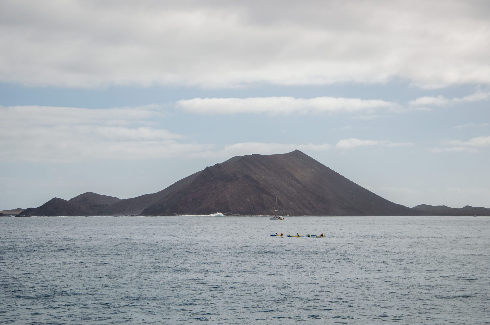

Solo 4,58 km² de naturaleza protegida. El mejor snorkel del archipiélago y máximo 200 visitantes por día garantizan la exclusividad.

Guías locales, escuelas de deportes y excursiones verificadas. Reserva con cancelación gratuita.
Ferry desde Corralejo hasta Isla de Lobos. Día completo con snorkel en El Puertito y senderismo.
+34 928 535 020Excursión de día completo a Isla de Lobos con snorkel, almuerzo y guía. Salidas desde Corralejo.
El volcán de La Caldera (127 m) es el punto más alto de Lobos. En 20-30 minutos de subida se llegan a tener vistas a Fuerteventura, Lanzarote y el Canal de La Bocaina.
La laguna natural protegida de El Puertito es el mejor spot de snorkel del archipiélago. Aguas tranquilas, cristalinas y poco profundas con gran variedad de peces tropicales.
La playa más tranquila del islote. Arenas blancas y aguas turquesas en la bahía protegida del sur. Ideal para el baño y el descanso después de la circular.
Lobos alberga colonias reproductoras de pardela cenicienta, gaviota de Audouin, paiño europeo y correlimos. La primavera es la mejor época para el avistamiento durante la nidificación.
Todo el año. Evitar agosto y Semana Santa por masificación. Mejor ir entre semana. Reservar el permiso gratuito con antelación en temporada alta.
Ferry desde Corralejo (Fuerteventura) en 15 minutos. Varias salidas diarias. Reserva obligatoria de permiso gratuito online antes de ir. Máximo 200 personas por día.
Senderismo hasta La Caldera, snorkel en El Puertito, visitar el Faro de Punta Martiño y bañarse en Playa de La Concha. Un día en plena naturaleza volcánica protegida.
Lo habitual es pasar un día completo. La vuelta a la isla a pie dura unas 3-4 horas. Lleva agua, comida y protección solar porque no hay servicios en la isla.
Es un Parque Natural con acceso limitado. No necesitas permiso especial pero sí reservar el ferry con antelación en temporada alta, ya que el cupo de visitantes diarios está restringido.
Compara las 9 islas por actividad, nivel, época y lo que más valoras. Encuentra la que mejor encaja contigo.